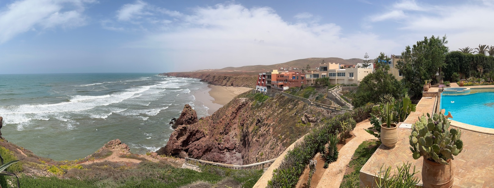
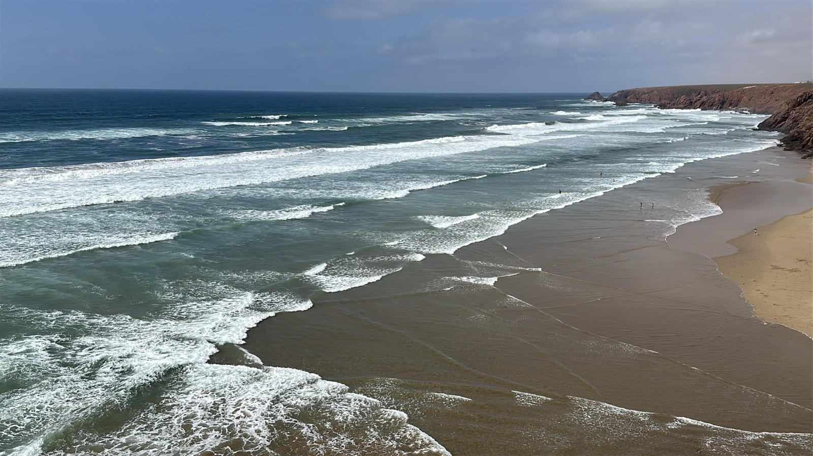
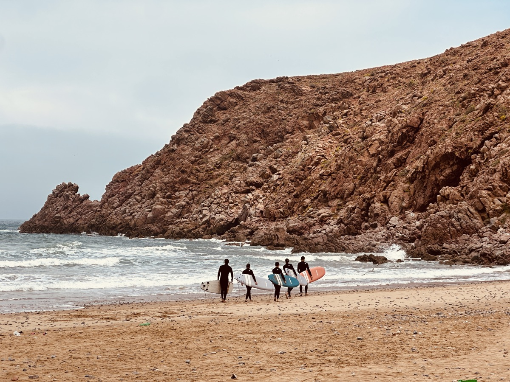

On your surfboard, there is only the now.
click or scroll to continue
7 dagen · Zuid-Marokko · Max. 7 deelnemers
Samen met mensen die hetzelfde herkennen, leer je surfen op een uitzonderlijke plek waar de oceaan je volledige aandacht opeist, je tempo terugschakelt en de constante ruis stillegt. Een programma op maat samengesteld.
"Geen luxe. Een noodzaak. Leren surfen als middel, de oceaan als spiegel. De week die je oordeel terugbrengt naar volle scherpte."
Ondernemen is topsport.
Je gaat hard. Je presteert. Een topsporter die piekt zonder herstel in te plannen? Ondenkbaar, want het is inboeten op performantie. Als ondernemer doe je het misschien al jaren, en noem je het ambitie.
Je beslist op intuïtie en ervaring. Maar hoeveel van je beslissingen neem je op halve scherpte, zonder dat je het merkt? Dat is de prijs die op geen enkele balans staat. WIPE IN creëert de condities om je energie te doseren, de ruis weg te filteren en terug te keren op volle scherpte.
Een week aan de oceaan die je dwingt aanwezig te zijn. Zeven ondernemers die je niet kiest maar tegenkomt, op een uitzonderlijke locatie. Je leert surfen, niet als doel maar als middel. De oceaan als spiegel.
Het geraas van de branding overstemt alles. Peddelen door de golven, en erover glijden. Ondergedompeld worden in iets dat groter is dan jij. Een oceaan waarin de golf bepaalt, niet jij. Dat is het begin.
De naam? Iedereen kent een wipeout. Het moment waarop je de controle verliest, ondergedompeld wordt, even niet meer weet welke kant boven is. Een wipeout overkomt je. Een wipe-in kies je bewust. Wipe-in is een bewuste sprong, 'reculer pour mieux sauter' zoals ze in Frankrijk zouden zeggen.
Voor wie
die beseffen dat harder duwen je niet scherper maakt, maar trager.
Een overname, een partnerschap, een nieuwe fase. De druk van buiten is er al. Maar voor je tekent of de sprong maakt, wil je eerst weten dat het klopt. Niet vanuit wat anderen verwachten, maar vanuit jezelf.
Een exit, een verkoop, het einde van een hoofdstuk. Van buitenaf ziet het er goed uit. Maar je weet nog niet wat het volgende hoofdstuk echt moet zijn, en je wil daar eerlijk over zijn voor je het te snel invult.
Geen crisis. Maar je voelt dat er ruimte is die je momenteel niet benut. Je omgeving ziet het niet. Maar jij wel.
De oceaan als spiegel
Surfen is hier het middel, niet het doel. De oceaan stelt vragen die je niet kunt omzeilen.
Aanwezigheid
Je hebt de luxe niet om afgeleid te zijn.
Overgave
De oceaan doet haar ding, wat je er ook van vindt.
Diepte
Er bevindt zich een heel universum onder de oppervlakte.
Ritme
Altijd, zonder uitzondering.
De wetenschappelijke basis
Na zeven dagen detecteer je sneller wat er speelt, reageer je kalmer op onzekerheid, en pas je je aan met meer veerkracht.
Fysieke intensiteit onderdrukt het piekerende brein. Op het board neemt het lichaam het over. Geen analyse, geen twijfel.
Een golf die je timing bepaalt, traint het zenuwstelsel om kalmer te reageren op complexiteit.
Mensen die hetzelfde herkennen creëren een veiliger leerklimaat dan individuele coaching.
Nabijheid van de oceaan verlaagt cortisol, verhoogt serotonine en triggert awe-responsen die dopamine en oxytocine vrijmaken.
Het traject
Elke stap heeft waarde en bereidt de volgende voor.
Stap één
Een open, verkennend gesprek. Elk gezelschap wordt met zorg samengesteld. We kijken samen of dit het juiste moment is en of er een match is met de groep. We vragen ook wat voor jou belangrijk is bij die samenstelling, bijvoorbeeld deelnemers uit dezelfde sector of net over sectoren heen. Wat de intake ook bepaalt: hoe de week eruitziet. Het programma wordt afgestemd op wie er meegaat.
Stap twee
Een eerste samenkomst. Bij voorkeur live, want dat bevordert het onderling overleg. Je maakt praktische afspraken en leert kennen wie er met je in de golven zit. We stemmen het vertrek op elkaar af, zodat de reis waar mogelijk samen kan beginnen.
Stap drie
Surfen als middel, niet als doel. Geen surfervaring of eigen materiaal vereist. Ideale condities in het najaar, 22 tot 25 graden, rustige spots en authentieke surfcultuur. Traditionele Marokkaanse keuken van een vast kookteam, afgestemd op wat de week van je lichaam vraagt: herstel, eiwitten, lokale ingrediënten.
Een typische dag
Stap vier
De week eindigt, maar wat je meeneemt niet. Op de laatste dag krijg je de ruimte om iets vast te leggen, voor jezelf, op het moment dat jij kiest. De rest is een verrassing, met een nazinderend effect. Je groep blijft nadien verbonden, op eigen tempo. En er volgt een avond waarop je opnieuw samenkomt, met iemand die je zelf mag meebrengen.
In een oogopslag
Wat je moet weten, voor je beslist.
Niet inbegrepen: vluchten, alcoholische dranken, individueel geïnitieerde activiteiten en je persoonlijke reis- en annulatieverzekering.



Na de week
Geen lijst van inzichten. Geen belofte van een doorbraak. Maar zeven dagen die iets verschuiven, en dat voel je nog lang nadien.
Alan Dergent
Founder
De founding story
Alan Dergent werkte jarenlang met ondernemers en bedrijfsleiders op het snijvlak van innovatie, circulair ondernemen en marketing.
In 2019 stond ik zelf op een kantelpunt. Ik merkte dat er iets niet meer klopte, van binnen. Geen naam voor, niet zichtbaar van buiten. Ik besloot te gaan surfen, in Bali. Het speelde al langer, maar kwam er niet van. Nu deed ik het.
De derde vroege ochtend op mijn surfboard. Ik had de nacht ervoor nauwelijks geslapen, een jetlag, een hoofd en lijf vol van wat ik had achtergelaten. En toen een golf die me ondersteboven gooide en me volledig dwong te ondergaan, tot loslaten. Op het moment dat ik boven water kwam, was alles stil. Niet opgelost. Stil.
"De oceaan deed via het lichaam wat via het hoofd niet lukte."
Sindsdien bleef ik surfen, aan de Belgische kust, in Frankrijk, Spanje, Marokko, Sri Lanka en de Filipijnen. Niet omdat ik een goede surfer ben. Omdat het werkt. Een equivalent voor professionals die verder staan in het leven, met andere vragen en een andere bagage, bestond gewoon niet.
WIPE IN is het antwoord op wat ik toen zocht: een bijzondere surfervaring die je via het lichaam toelaat terug te keren naar je kern, te herontdekken wat al in je aanwezig is. Een ervaring die je niet vertelt wie je moet worden, maar je wel de ruimte en de omgeving biedt om het zelf te voelen.
Praktische vragen
Moet ik al kunnen surfen?
Nee. De sessies worden begeleid door een gecertificeerde lokale surfcoach en afgestemd op je niveau. Progressie op het board is geen doel, aanwezigheid in het water wel. De oceaan en het getij bepalen wanneer er gesurft kan worden. Er zijn negen surfspots in de omgeving, en de surfcoach kiest de meest geschikte in functie van je niveau en de condities op dat moment.
Wat maakt dit anders dan een vakantie die ik zelf zou boeken?
Omdat je het voor jezelf nooit zo zou samenstellen. Niet de bestemming maakt het verschil, de condities. Een zorgvuldig samengestelde groep die je niet kiest maar tegenkomt. Een programma afgestemd op wie er in zit. En een omgeving die je dwingt aanwezig te zijn op een manier die je zelf niet kunt forceren. Een vakantie geeft je rust. WIPE IN geeft je iets om op terug te vallen.
Hoe ziet de selectie eruit?
Een gesprek van ±30 minuten. We kijken samen of dit het juiste moment is en of er een match is met de groep. We vragen ook wat voor jou belangrijk is bij de samenstelling. Niet elke aanvraag leidt tot deelname, maar elke aanvraag krijgt een eerlijk antwoord.
Kan ik zeven dagen onbereikbaar zijn, en hoe leg ik dat uit?
WIPE IN legt geen digitale detox op, de oceaan doet dat vanzelf. Om maximaal effect uit de week te halen, moedigen we deconnectie aan. Het FOMO-effect blijkt vaak overroepen. En naar je team, partner of board toe: je vertrekt niet voor een week surfen, je vertrekt om met een helder hoofd terug te komen en je volgende fase scherp te krijgen. Hoe je het praktisch regelt, bespreken we tijdens de intake.
Waarom Marokko, en niet dichter bij huis?
De condities in het zuiden van Marokko zijn uitzonderlijk stabiel, de golven veelal consistent, en er zijn weinig andere surfers in het water. Dat maakt het een rustigere leeromgeving dan de overbezette spots in Frankrijk of Portugal. Daarbij dragen het ritme, de cultuur en de afstand van je dagelijkse context bij aan wat WIPE IN teweeg wil brengen. Dat effect bereik je niet aan de Belgische of Nederlandse kust. Consistente condities ook niet.
Is dit het juiste moment?
Deze eerste editie vraagt zorgvuldige samenstelling van de groep. Via dit gesprek stemmen we behoeften en verwachtingen op elkaar af.
Nog niet het juiste moment?